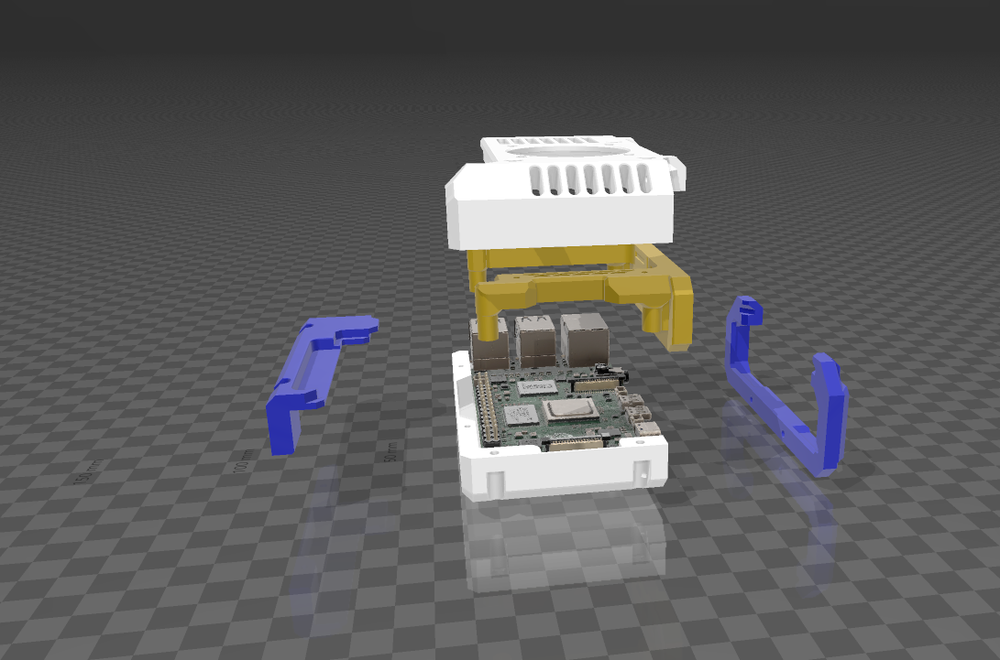
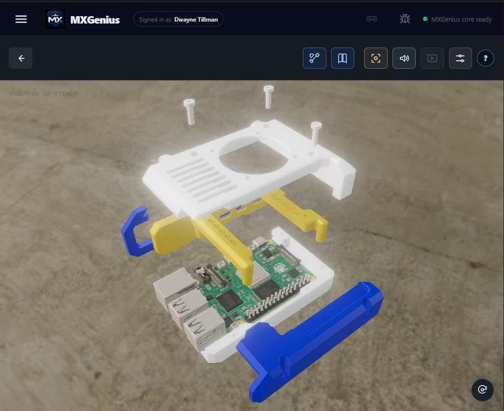

MXGenius apparatus · updated October 23, 2026
XDrive V7: current build and acceptance plan
Current state: the V7 enclosure is the active build candidate. Its five enclosure parts, calibrated Raspberry Pi reference board, and three representative axial fasteners are secured in the repository and published in the build viewer. The ten-second sequence starts closed and separates into an inspection view without part clipping. Bench video and stills document the current physical electronics and printed enclosure. Physical assembly, reinforced battery-handle integration, and field acceptance remain open.
Readiness at a glance
| Area | Established | Next proof |
|---|---|---|
| V7 enclosure geometry | The current five-part shell and authored assembly are published. Closed and exploded states use the same part geometry and calibrated offsets. | Print the current parts and confirm closure, retention, wall strength, and repeatable assembly. |
| Pi and 52Pi packaging | The viewer uses a calibrated Raspberry Pi board reference. The current power architecture routes regulated power through the 52Pi GPIO path and leaves USB-C available for data. | Dry-fit the real stack and verify every mounting point, connector, control, card, wire bend, and cooling path. |
| Fasteners | Three representative M3-class fasteners follow their mounting axes in the assembly sequence. | Confirm exact screw diameter, length, head clearance, thread engagement, and standoff alignment on the physical build. |
| Battery, footer, handle, and strap | The DeWalt battery-foot direction, internal steel reinforcement, dense grip, wire channel, rear flare, and retention requirement are carried forward from the October 16 study. | Complete the structural load path from footer through handle to enclosure, preserve battery release travel, and verify balance while standing, holding, and carrying. |
| Power, data, and thermal operation | The Pi/52Pi wiring and earlier 18-hour battery-runtime baseline establish the compute power approach. The USB-C mass-storage path remains a separate data interface. | Repeat boot, network, transfer, thermal, shutdown, reconnect, and recovery checks in the assembled V7 enclosure. |
Decisions carried into V7
- The actual Raspberry Pi board and connector layout are the dimensional reference. Earlier work based on a different Pi case is superseded.
- Earlier prints exposed thin port walls, support-removal damage, split mounting holes, and missing power-button clearance. Those prints remain diagnostic evidence and are not acceptance models.
- The current V7 viewer is the source for assembly communication. Rev3, R04, and the drill-style color mockups remain design-history references.
- The DeWalt configuration is the active hardware path. Makita and Milwaukee images communicate a possible platform direction and do not claim compatibility.
Integrated acceptance gate
- Print and inspect. Print the current V7 parts; reject cracks, weak travel layers, blocked supports, distorted holes, and incomplete port walls.
- Dry assemble the electronics. Seat the Pi and 52Pi without bending either board. Confirm mounts, fasteners, power button, card access, ports, plug collars, wire routing, strain relief, and ventilation.
- Complete the portable structure. Integrate the purchased battery footer, internal steel reinforcement, handle, strap, and stable standing surfaces without transferring battery or carry loads into PCB mounts.
- Run the appliance. Boot from the battery, join the intended network, expose the approved USB-C data path, transfer and verify a representative package, then test safe eject, shutdown, reconnect, and recovery.
- Observe the enclosure under load. Record voltage and undervoltage state where available, temperatures, connector retention, wire movement, and enclosure behavior during standing, holding, tilting, and carrying.
- Make the decision explicit. Record the tested configuration, results, defects, and an accept-or-revise decision. Until that record exists, V7 remains ready to test rather than field accepted.
Open gate: a completed V7 print and dry fit, exact fastener acceptance, reinforced battery-handle assembly, and the integrated battery/network/USB/thermal test.
Current evidence




Watch the V7 bench walkthrough or open R&D Highlights for the complete visual record.
Earlier records
The October 16 concept-stage record preserves the measured battery/footer envelope, steel reinforcement, grip, strap, wire-clearance, and platform-direction work. The October 7 archive preserves Rev3, FLIR, slicing, and early print evidence. Those records explain the progression; this page defines the current V7 readiness state.